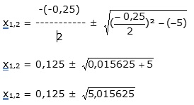
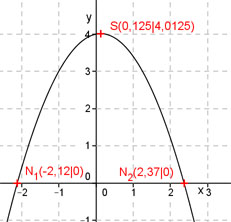

Aufgabe 65 Welche Koordinaten haben der Scheitelpunkt S und die Nullstellen N der Funktion y = -0,8x2 + 0,2x + 4? y = -0,8x2 + 0,2x + 4 |:(-0,8) y - ----- = x2 - 2,5x – 5 0,8 Quadratische Ergänzung: y - ----- = x2 - 0,25x – 5 0,8 y - ----- = x2 - 0,25x + 0,015625 – 0,0156125 - 5 0,8 mit x2 - 0,25x + 0,0156125 = (x – 0,125)2 y - ----- = (x - 0,125)2 - 5,0156125 |*(-0,8) 0,8 y = -0,8(x – 0,125)2 + 4,0125 Dies ist die Scheitelpunktform. S abgelesen: S(0,125|4,0125) Nullstellen: y = 0 0 = -0,8x2 + 0,2x + 4 |:(-0,8) 0 = x2 - 0,25x - 5 p, q – Formel :  x1,2 = 0,125 ± 2,24 x1 = 0,125 – 2,24 = -2,12 gerundet x2 = 0,125 + 2,24 = 2,37 gerundet N1(-2,12|0) ; N2(2,37|0) 